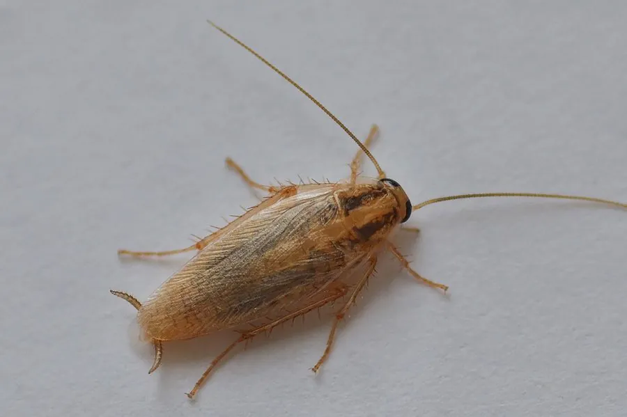

昆虫 · 动物界
德国小蠊 Blattella germanica

全球广泛分布的居家蟑螂，体形小而扁平，前胸背板有两条深色纵纹，繁殖力极强，是重要的卫生害虫之一。
- 分类
- 门节肢动物门纲昆虫纲目蜚蠊目科姬蠊科属小蠊属
- 栖息环境
- 温暖潮湿的室内环境，如厨房、卫生间和食品储藏室
- 地理分布
- 全球分布，随人类活动扩散到各大洲
- 保护级别
- 暂无评估
物种志
德国小蠊成虫体长 1.2–1.6 cm，体形小而扁平，呈浅黄褐色至棕褐色。它的前胸背板上有两条平行的深褐色纵纹，是重要的识别特征；触角细长，前翅覆盖腹部，后足有刺，适合疾走；雌虫腹部末端有分节的尾须。
德国小蠊原产于非洲或亚洲，如今随人类活动扩散到全球，是最常见的室内蟑螂之一。它喜温暖潮湿的环境，常在厨房、卫生间、食品储藏室活动，杂食性，取食食物残渣、油脂和淀粉；昼伏夜出，善于钻缝和疾走。德国小蠊繁殖力极强，雌虫产下含 30–40 粒卵的卵鞘，一年可繁殖数代。它可携带沙门氏菌等病原体、污染食物，并引发过敏，是重要的卫生害虫，也因抗药性强而难以防治。
形态与习性
- 食性杂食，食物残渣、油脂与淀粉类
- 体长成虫 1.2–1.6 cm
- 活动节律昼伏夜出，善于钻缝疾走
- 繁殖雌虫产含 30–40 粒卵的卵鞘，一年可繁殖数代
- 识别特征前胸背板有两条深褐色纵纹
- 卫生影响可携带病原体、污染食物并引发过敏
趣味知识
- 德国小蠊前胸背板上有两条平行的深褐纵纹，便于识别。
- 一个卵鞘可含 30–40 粒卵，一年能繁殖数代。
- 它昼伏夜出，善于钻进狭窄缝隙躲避。
- 德国小蠊可携带沙门氏菌等病原体，污染食物。